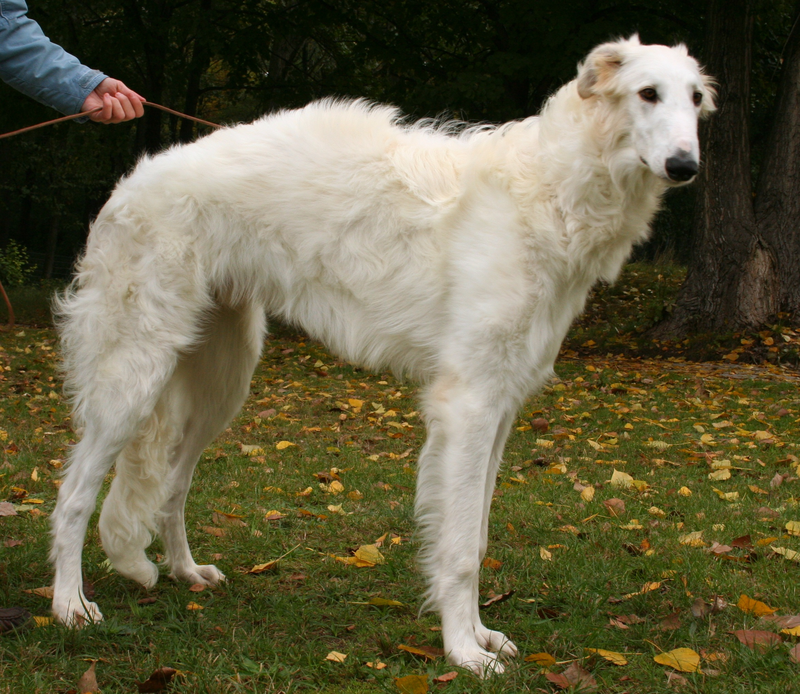

The BorzoiBorzoi in Russia have a long history as dogs of the nobility. The Kennel of Grand Duke Dmitry in Perchino can be found in almost all Borzoi bloodlines todayBorzoi are not only heavy dogs, but very long as well. A large male can easily reach over siz feet tall when standing on its legs!

While all colours are accepted, white self Borzoi are among the most popularA red Borzoi being stackedA silver brindle Borzoi in situDespite being hunting dogs, Borzoi tend to be silly and not take themselves seriouslyEven female dogs are huge in the breed, and can often dwarf their human owners while standingBorzoi have historically been run in packs during hunts. They've often been the muses of Russian paintersBorzoi come in almost any colour. As a result, having a "rainbow" pack is quite common!